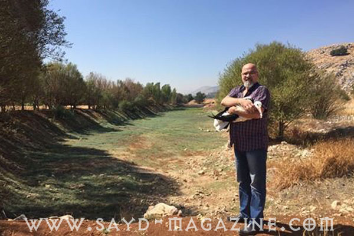

فيلة تولد بلا أنياب لتحمي نفسها
بعكس الأجيال السابقة أصبحت بعض الفيلة في دول أفريقية عديدة تولد بلا أنياب. ويعتقد الباحثون أن هذا يعود لكثرة حالات الصيد التي تستهدف قتل الفيلة للحصول على أنيابها العاجية وبيعها.…
بعكس الأجيال السابقة أصبحت بعض الفيلة في دول أفريقية عديدة تولد بلا أنياب. ويعتقد الباحثون أن هذا يعود لكثرة حالات الصيد التي تستهدف قتل الفيلة للحصول على أنيابها العاجية وبيعها.…

"قصص الصيد وحكايات الصيد اه يا جدي شو حلو الصيد "، حين قالت فيروز (هيفا) هذا الكلام لجدها نصري شمس الدين ( ابو ديب)، في مسرحية “يعيش يعيش”، ولم تكن تقصد بالطبع قصص القواصين وتعليق…
حين تصطاد العدسة لقطتها المميزة، تؤرخها في قلب اللحظة الى الابد ولا اروع من هكذا لقطة ان تظهر رجل براس حصان من خلال لحظة التفاتة الحصان الى يمينه ..الجزء من الثانية يتكلم ...
للصياد مزاجه وطرائفه التي يستوحيها من عالم الصيد والطبيعة والتي عادة ما تكون ممزوجة بعفوية رائعة .. هذه الصورة من إخراج الصياد اللبناني الياس سلهب الذي أراد لكلبيه new look ربما ل…
لا يمكن إلا الإشادة بعين هذا المصور الذي جعل من لقطة عادية لقطة مميزة جدا تشبه الأافلام الخيالية .. الصورة عن الإنترنت
بعض اللقطات التصويرية التي لا تكن في الحسبان تكون من اروع واغرب اللقطات .. هذه صورة عن الانترنت لغواص يسبح والصورة اخذت له في لجظة فرار سمكة كبيرة من امامه فبدا وكأنه رجل برأس سمك…
صورة تصيّدتها عدسة الصياد اللبناني ايدي معلوف لشخص يبحث في القمامة عن شيء يستفيد منه فإستوقفته "المعرفة "في مستوعبات النفيات..
صور معبرة جدا عن الانترنت .. كاميرات ومعداتها بشكل بندقية في تليمح الى ان العدسة هي ايضا هي كالبندقية يمكنها ان تحقق الهدف .. العدسة لا تقتل الطائر انما تخلّده ..
هذه الصورة التي نشرها على موقع التواصل الاجتماعي( فايسبوك ) احد المتباهين الجهلة من القواصين الذين يقتلون الطيور بشكل عشوائي، تعتبر عند الصيادين جريمة اخلاقية كبيرة . فطائر الحسون…
من لا يحترم نفسه .. لا يمكن ان تطلب منه احترام اي شيء في الحياة .. حقا يخجل الكلام من ان يعلق على هذه الصورة
يؤكد الكثير من شيوخ الصيادين " الصيد مش شبعة بطن " لانهم يدركون ان جمال رحلة الصيد ليست بالعدد الذي يقنصونه من الطيور انما بعناصر الرحلة من الاستيقاظ في الصباح الباكر الى اللقاء م…
يتباهى هذا "القواص" بقتل طائر اللقلق، وهذا الطائر لا يؤكل وهو من الطيور الممنوع اصطيادها عالميا لانه مفيد للبيئة ويأكل الجراذين والافاعي والضفادع.. "مصيدة" رصدت هذه الصورة المنشور…
بينما يقوم الغرب بدراسات مضنية وورش عمل كثيفة ورصد اوقات كبيرة ومبالغ باهظة للحفاظ على التوازن الطبيعي من خلال المحافظة على الطيور وإقامة حياة مستدامة ..يقوم الجهلة عندنا الذين لم…
لكي يأخذ الصياد لقطة مماثلة لا شك انه من الصيادين الذين يجيدون التمتع بشكل ومضمون الصيد ..واللقطة خير دليل على انه صياد مستدام استنادا الى كمية الصيد ونوعه والى الشكل الجميل الذي…
لم يكن الصياد الصيني شين جوهونج من مقاطعة فوجيان، مجرد صياد بحري.. انما صياد افكار ايضا، فقد حول هذا الرجل دراجاته النارية إلي مركب برمائي، يتسع لعدة اشخاص برا وبحرا بعد ان كانت ا…
اطلاق الأضواء الكاشفة على الاشجار في الليل لصيد الطيور عمل مشين يمقته كل صياد حقيقي، فهو نوع من الخداع لا يمت الى الصيد بصلة. وبغض النظر عن القوانين التي تمنع هذا النوع من الصيد ف…